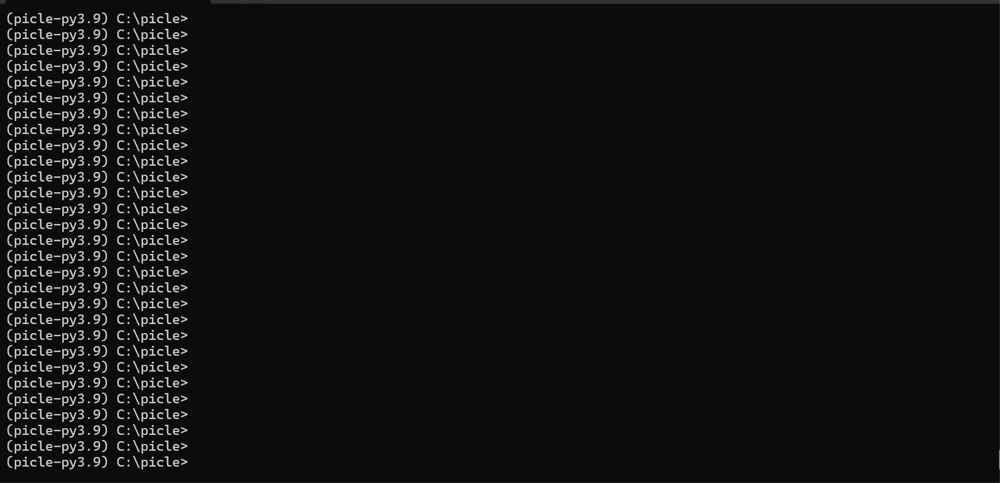

Getting Started
Introducing PICLE
Command-line interface (CLI) is the software interface used to interact with the system. From CLI you can run commands and receive output.
The command-line interface usually includes lots of shortcuts and commands to get help, auto completion, argument choices and validation of input.
PICLE creates structures of shell modes hierarchies, as illustrated in Figure 1. The hierarchy of each mode is made up of cascading branches of related commands and their functions.
Root
|-command -> Model
|-command -> Field
|-command -> Field
|-command -> Field
|-RUN Function
|-command -> Function
|-command -> Model
|-Shell
|-command -> Field
|-command -> Model
|-command -> Field
|-RUN Function
Figure 1. Sample shells hierarchy.
Each shell has its own prompt and a set of commands.
Commands parsed sequentially in the order they are inputted on the command line.
Each command can point to one of:
- Pydantic model with or without shell
- A Pydantic model field with values to collect
- A function to run
Each model may have a RUN function defined, this function
executed with collected field values.
Sample Application
PICLE uses Pydantic models to construct interactive shells and their commands. For example, to create interactive shell that has this structure:
Root
|-show -> model_show
|-version -> Function - output software version
|-clock -> Function - display system time
Can use code below:
import time
from picle import App
from typing import Callable
from pydantic import BaseModel, Field
class model_show(BaseModel):
version: Callable = Field("show_version", description="Show software version")
clock: Callable = Field("show_clock", description="Show current clock")
@staticmethod
def show_version():
return "0.1.0"
@staticmethod
def show_clock():
return time.ctime()
class Root(BaseModel):
show: model_show = Field(None, description="Show commands")
class PicleConfig:
prompt = "picle#"
intro = "PICLE Sample app"
if __name__ == "__main__":
shell = App(Root)
shell.start()
Each Pydantic model can have PicleConfig subclass defined
listing model configuration.
Root -> show model field refers to model_show Pydantic model
which has two fields version and clock each referring to
callable function which is executed when user hits ENTER on the
command line.
Run above code with python myshellfile.py command and interact with
the shell:
